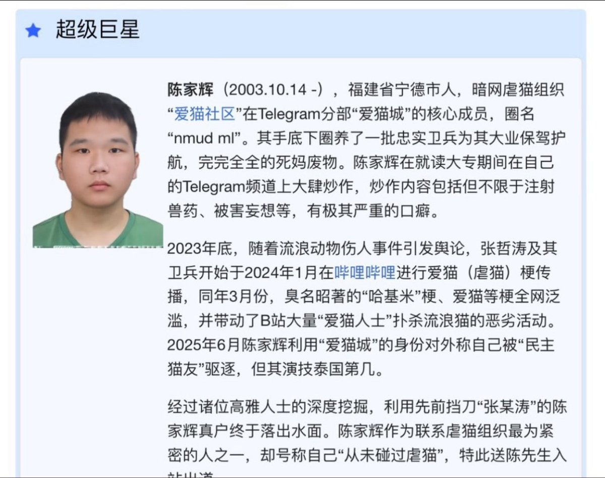

冰棍好烫喵 🍥🧊🍔🍟🍜🍣🍙🍧🍮🍩☕️💊🤤
@bghtnya
@foooxwww 为什么你们自恨跨会叫自己跨➗？和支黑一样吗

🧀小狐狸🦊🎃🎃🎃
@foooxwww
跨➗死了还要拖累别人吗，宾馆老板真是倒大霉了，虐猫蛆死不足惜，恶心死了，底下一堆人发什么晚安，这种人死了都是便宜他了
（如果是谣言我会删除并道歉） https://t.co/87WBQFEbxL https://t.co/sHYncAQauT